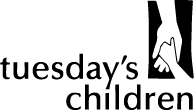
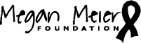

The first documentary by and about the Kids of 9/11. Nearly 16 years after losing her father and two uncles on September 11th, Delaney Colaio goes on an inspiring journey to unite with other surviving children. Alongside Delaney, we will hear their stories as we find our Kids at different stages of dealing with grief. Following their paths, literally and figuratively, we ultimately discover that all roads lead to hope. Benefitting Tuesday's Children, We Go Higher aims to be a resource for recovery for anyone dealing with loss and promises to inspire a renewed sense of hope and unity by empowering this group of Kids to become their own narrators.
BENEFITTING TUESDAY'S CHILDREN
Women Rising is the founding partner, director, and producer of ProtectHer. With the belief that in order to safeguard the dorm rooms, we have to activate the influence of the locker rooms, ProtectHer is a first of its kind sexual assault prevention program focused on male athletes. The four-part film series is made up of a feature length documentary and three short companion pieces, accompanied by a companion educational curriculum. The program is available for license to schools and universities and delivered via a protected, proprietary digital platform.
BENEFITTING THE WHITE HOUSE'S ITS ON US CAMPAIGN
As producers of A Brave Heart: The Lizzie Velasquez Story, Women Rising oversaw every aspect of the film. Born with a rare syndrome that prevents her from gaining weight, Lizzie was bullied in school and online as she discovered a video labeling her “The Ugliest Woman in the World”. Lizzie's story proves that there is life on the other side of bullying and that self-worth and compassion are essential on that journey. With a world premiere at SXSW, the film went on to win 10 festival awards and qualified for the Academy Award, turning Lizzie into a national hero along the way.
BENEFITTING THE MEGAN MEIER FOUNDATION
Women Rising is proud to be a producer on this brave and personal animated film about a woman's experience dealing with chronic pelvic pain. Directed by Shelby Hadden, Tightly Wound was inspired by her own powerful essay featured in Cosmopolitan, Bustle, and The Mighty. Awarded “Project of the Week” and “Project of the Month” on Indiewire, Tightly Wound is set to premiere in early 2018.
BENEFITTING THE INTERNATIONAL PELVIC PAIN SOCIETY
Women Rising produced and directed an original two-part series titled “Lizzie's Film, Everyone's Story”, for Condé Nast Entertainment and Glamour.com. In the series, Lizzie hosts a Girl's Night with 5 Glamour readers and discusses topics brought up in her film A Brave Heart: The Lizzie Velasquez Story - such as Bullying and Meanness, Female Empowerment, and The True Meaning of Beauty.
Watch both episodes HERE